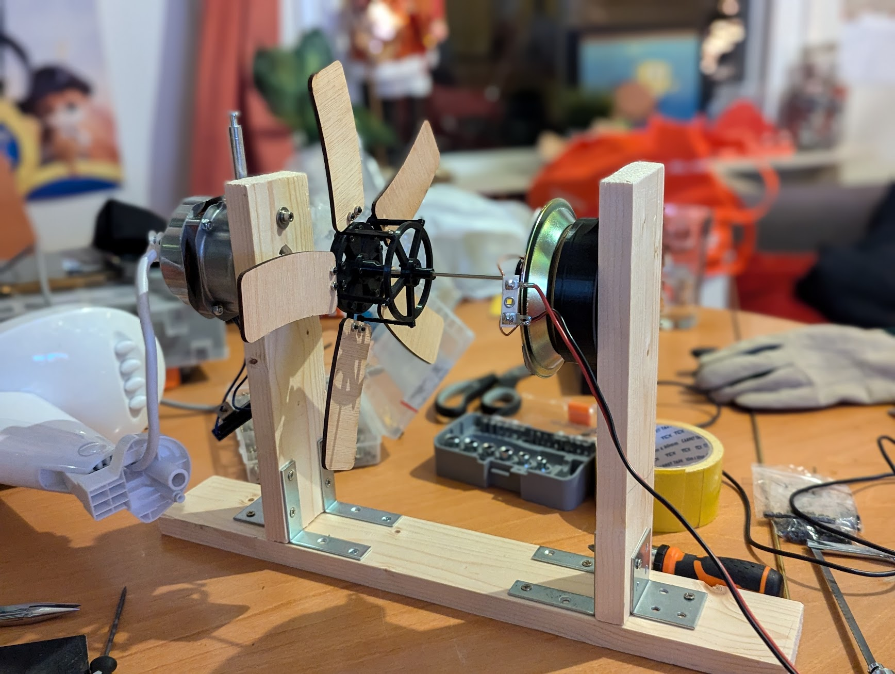

The picture to the right shows the subwoofer placed in the opening of a window, with plywood around it to make it as airtight as possible. This turns the entire house into the enclosure.
The CAD design can be seen on the right. I used an old fan motor to make the subwoofer rotate, and to module the blade pitch I used the voice coil of an old subwoofer. The modulation mechanism consists of two discs that can move with respect to each other. The blades are connected to one of the discs via some tiny bearings. The other disc is connected to the blades via small rods that push and pull the blades. The voice coil moves this second disc, and thus changes the pitch of the blades. All the black parts are 3D printed and the blades were laser cut from some very thin plywood. After building it it looks as follows:
A traditional speaker setup consists of speakers for the higher frequency range and a subwoofer for the lower frequency range. The higher frequency range is covered quite well by the midrange speakers and tweeters. However, the lower frequency range is not fully covered by a traditional subwoofer. The response of most subwoofers already rolls off above 20Hz, and most subwoofers certainly do not cover the infrasonic range (f < 20Hz).
A rotary subwoofer can solve this gap in frequency response. It can generate very low frequencies and can even go down to 0Hz, which is no useful sound but is just constant displacement of air. Whereas the limitation of traditional conus-based subwoofers is a lower frequency limit, the limiting factor for a rotary subwoofer is actually an upper frequency limit.